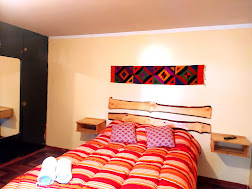

📍 Reserva Paisajística Nor Yauyos Cochas
Aventura, historia y naturaleza en la Cordillera Blanca: lagunas turquesas, nevados eternos y un legado milenario en pleno corazón de los Andes.
Un fin de semana entre Chavín de Huántar, el Nevado Pastoruri, la Laguna Llanganuco y la mítica Laguna 69, en el corazón de la Cordillera Blanca.

Huaraz, capital de la Cordillera Blanca, es la puerta de entrada a algunos de los paisajes más espectaculares del Perú: lagunas de un turquesa imposible, nevados que superan los 6,000 msnm y el legado milenario del complejo arqueológico de Chavín de Huántar, Patrimonio de la Humanidad.
En un solo fin de semana podrás recorrer siglos de historia preincaica y caminar entre glaciares y aguas cristalinas dentro del Parque Nacional Huascarán, Reserva de la Biosfera declarada por la UNESCO.
Los rincones más emblemáticos de la Cordillera Blanca.

Complejo arqueológico preincaico, Patrimonio de la Humanidad por la UNESCO.

Glaciar tropical a más de 5,000 msnm, uno de los más visitados del Perú.
Aguas de un celeste brillante rodeadas de nevados, dentro del Parque Nacional Huascarán.

Dos lagunas turquesas flanqueadas por los nevados Huascarán y Huandoy.
Los tours son el 24 y 25 de octubre. Salida desde Lima: viernes 23, 10:00 p. m.
🚐 Llegada a Huaraz.
🚙 Salida hacia Chavín de Huántar.
🏛️ Visita al complejo arqueológico de Chavín de Huántar.
📸 Laguna Querococha. Parada fotográfica.
🏔️ Nevado Pastoruri.
🔙 Retorno a Huaraz.
🌆 Visita a la Plaza de Armas de Huaraz.
🛌 Alojamiento en Huaraz.
☕ Desayuno y salida hacia el Parque Nacional Huascarán.
💙 Laguna Llanganuco.
🥾 Trekking a Laguna 69.
📸 Tiempo libre para fotografías.
🔙 Retorno hacia Huaraz.
🚌 Salida de retorno a Lima.
El tour no incluye hospedaje, pero puedes agregarlo fácilmente. 1 noche en Huaraz, entre el día 1 y el día 2 del recorrido.

1 / 2Habitación matrimonial
Alojamiento sencillo y acogedor para descansar entre el día 1 y el día 2 de tu recorrido por Huaraz.
Tour Huaraz (S/ 270) + 1 noche en habitación matrimonial (S/ 60). Todo coordinado por PlanEnRuta, sin trámites adicionales.
Todo lo que debes saber antes de viajar al tour Huaraz.
Salimos el viernes 23 de octubre a las 10:00 p. m. desde Lima. El Día 1 del recorrido es el sábado 24 (Chavín y Pastoruri) y el Día 2 es el domingo 25 (Llanganuco y Laguna 69), con retorno esa misma noche.
Sábado 24: Chavín de Huántar, Laguna Querococha y Nevado Pastoruri. Domingo 25: Laguna Llanganuco y trekking a Laguna 69. Revisa el itinerario completo más arriba.
No de forma predeterminada, pero puedes agregar una habitación matrimonial por S/ 60 la noche, o elegir el paquete completo (tour + hospedaje) por S/ 330.
No es indispensable, pero es un trekking de nivel moderado en altura. Recomendamos estar en buena condición física y llegar con al menos un día de aclimatación.
Huaraz está sobre los 3,000 msnm. Recomendamos hidratarte bien, evitar comidas pesadas y alcohol antes del viaje, y llevar pastillas para el mal de altura si eres propenso.
Puente Nuevo (9:00 p. m. y 10:00 p. m.) o Plaza Norte (9:30 p. m.). Te confirmamos el punto exacto al reservar.
Escríbenos por WhatsApp al 923 118 811 o usa el botón "Reservar ahora" de esta página para confirmar disponibilidad y separar tu cupo.